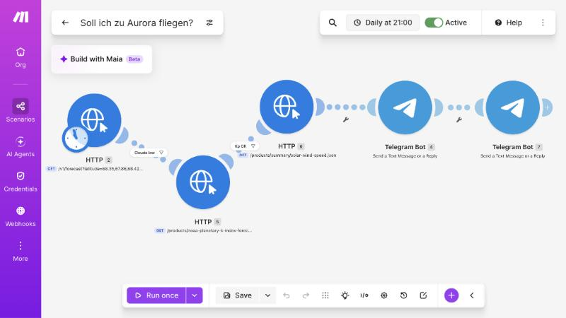
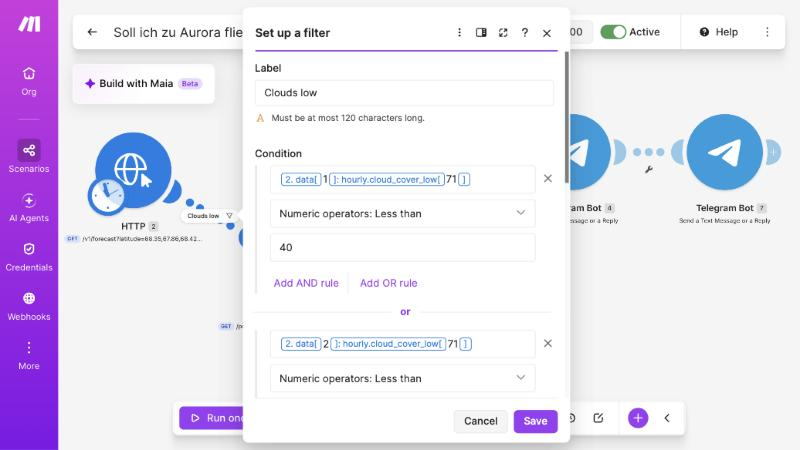
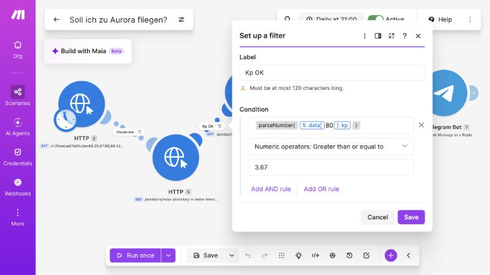
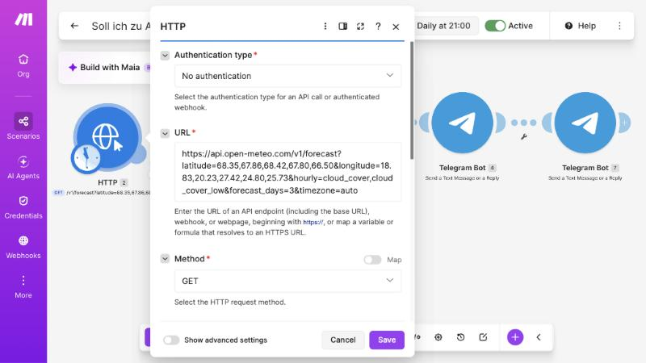
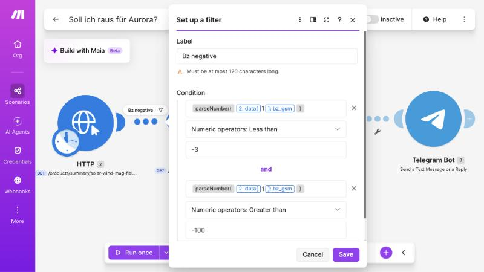
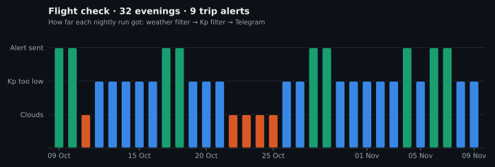
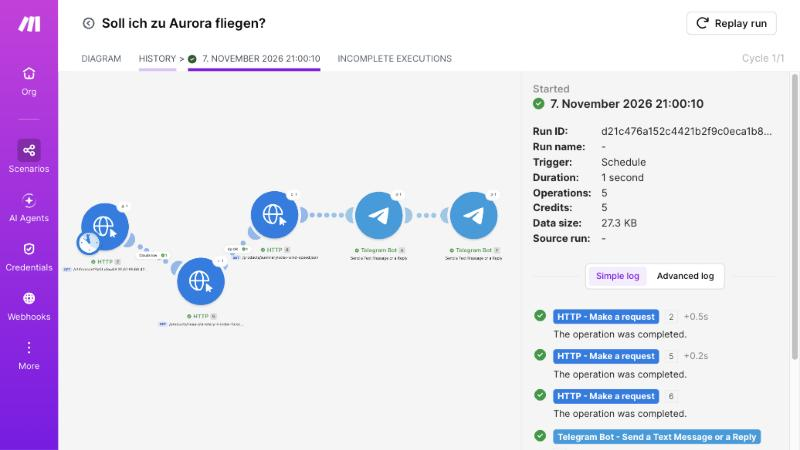
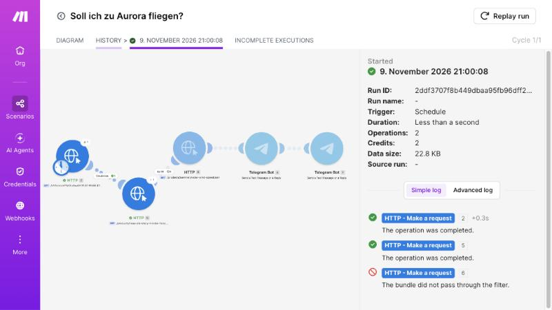
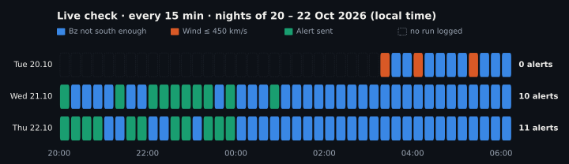

Aurora-Alert
Two Make.com scenarios watch the clouds and the solar wind over Lapland and post to a Telegram channel when the northern lights are likely: two days ahead for booking a flight, 20 to 60 minutes ahead for a look at the sky. Deliberately without AI, on the free tier, without a server of my own.
- My role
- Idea, data sources, filter logic and thresholds, building both scenarios in Make.com, troubleshooting in live operation and cost optimisation.
- Tools
- Make.com, Open-Meteo, NOAA Space Weather Prediction Center, Telegram Bot API, Claude
- Status
- Scenario 1 has run every evening since October 2026. Scenario 2 is switched on when I travel. Blueprints and documentation are public on GitHub, alerts go to the Telegram channel.
Starting point
A northern lights trip to Lapland needs two very different answers:
- Is a flight in two days worth it? This depends on the cloud forecast at several places and the forecast of geomagnetic activity (Kp index).
- Is it worth going outside now? This depends on solar wind measurements that are available only 20 to 60 minutes before they take effect on Earth.
- The data is scattered across several websites, in raw data and technical terms.
- Tight limits: the free Make.com plan, 1,000 operations a month, at most two active scenarios.
Approach
- Two questions, two scenarios. A two-day forecast does not help you decide whether to put your jacket on now, and 40 minutes of lead time are not enough to book a flight. So there are two separate scenarios, each with its own schedule.
- The cheapest filter first. In Make every executed module costs one operation. The check that fails most often comes first: clouds in the first scenario, the direction of the magnetic field (Bz) in the second. On most evenings the run ends after one or two operations.
- Low clouds instead of total cloud cover. The aurora glows above 100 km. High thin clouds only dim it, low clouds hide it. That is why the filter checks
cloud_cover_low, at five places with OR logic: one clear place is enough, you can drive there. - Protection against false alarms. When satellite data fails, NOAA returns the placeholder −999. To a simple filter this would look like a record storm. A second condition (Bz greater than −100) lets real storms through and holds back data gaps.
- Troubleshooting a real case. During a G3 storm the scenario stayed silent. The execution history showed one operation per run, and the filter inspector showed a valid but not negative enough Bz value. The scenario had decided correctly: the storm had peaked before it was switched on.
- Lower costs. The second scenario now runs every 30 instead of 15 minutes, and the solar wind threshold went from 400 to 450 km/s. Both together halve the cost of an active night.
- Alerts for a broad audience. Nested
if()expressions translate the raw values into plain language directly in the message, without extra modules. Since November 2026 the alerts are in English, so the public channel can be read internationally.
Solution
- “Soll ich zu Aurora fliegen?” (Should I fly to the aurora?) runs daily at 21:00. A single Open-Meteo request fetches the cloud forecast for Abisko, Kiruna, Saariselkä, Levi and Rovaniemi. If the sky is clear, the NOAA Kp forecast and the solar wind speed follow. The alert contains pre-filled links to Google Flights.
- “Soll ich raus für Aurora?” (Should I go out for the aurora?) runs every 30 minutes between 20:00 and 06:00. It checks measurements from the point L1, about 1.5 million km in front of the Earth: if the magnetic field points south and the solar wind is fast enough, the alert “Go outside now” arrives with viewing direction and camera settings.
- No keys and no server: all three data sources are public and need no authentication.





Figures from operation
Taken from the Make execution history, 9 October to 9 November 2026.




| Evening runs, scenario 1 | 32, all successful |
|---|---|
| Alerts “flight is worth it” | 9 (28 %) |
| Operations per evening | 2.5 on average, about 75 a month |
| Run time | 0.9 seconds (median) |
| The same logic, built naively | about 8,700 operations a month, many times the free budget |
Result
- Two questions that otherwise require a look at several specialist websites are answered by one Telegram message.
- Scenario 1 needs less than a tenth of the free budget. 72 % of the evenings end after one or two operations.
- Every threshold is justified and documented, including the ones that look like typos: design notes on GitHub.
- The pattern can be reused: cheap pre-checks before expensive calls, catch placeholder values, translate raw data into plain language directly in the message.
The values in the Telegram alerts in the video are sample values; the logic is real. Chat IDs and connection data are removed from the published blueprints.